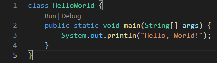
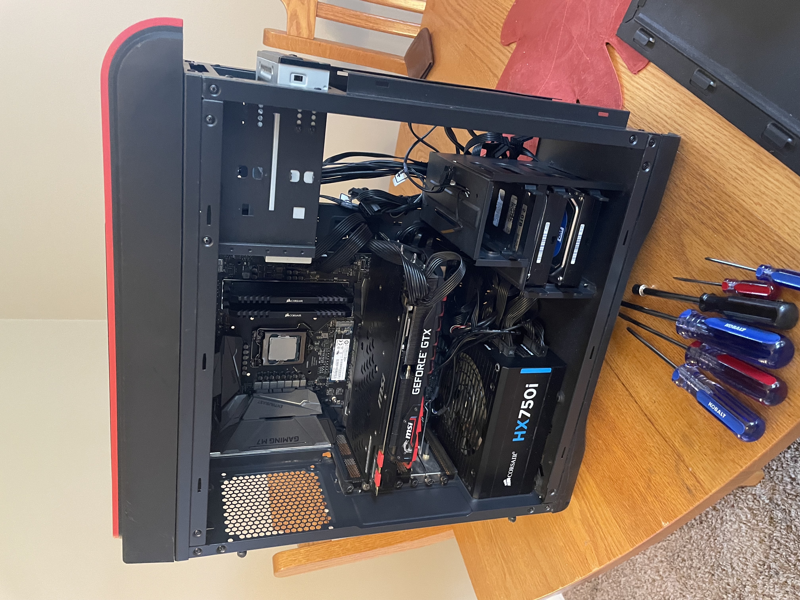
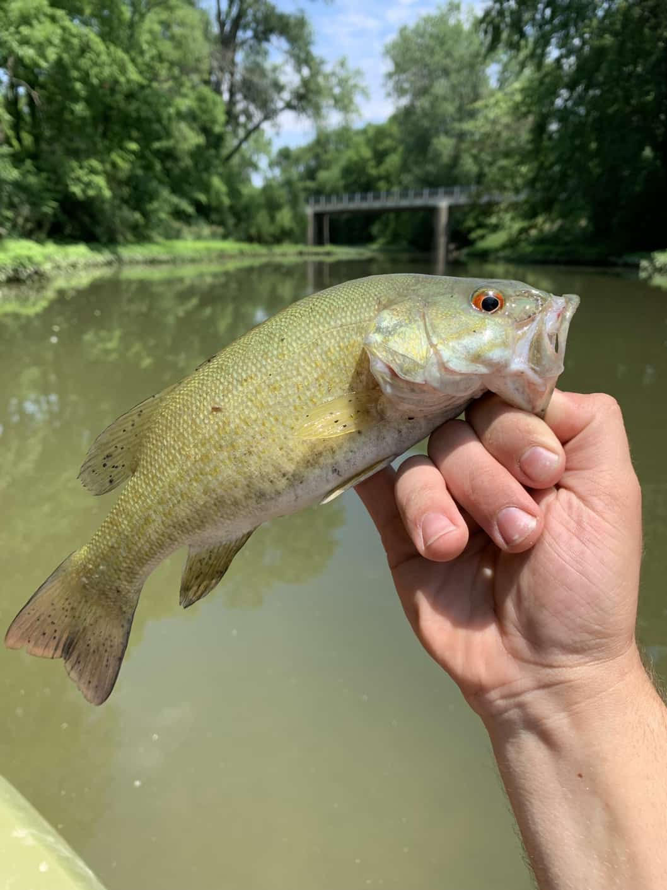
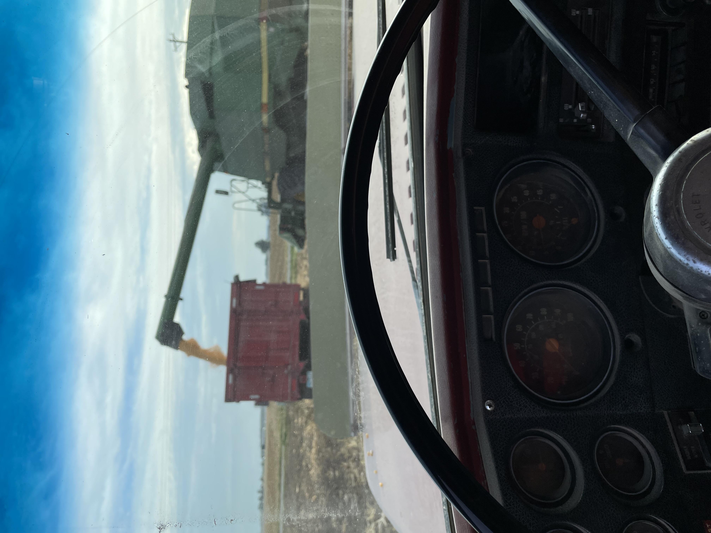

My truck
The first (and most expensive) of my hobbies is fixing up my pickup truck. Last year (2020), I bought myself my first pickup truck. It had 192,000 miles when I got it and hardly ran well enough to take on the road. I have been slowly working on it to get it to where it is today. This involved rebuilding the front suspension, putting on all new brakes, fixing a mechanical issue with the engine, and rebuilding the transfer case (4-wheel-drive component).

Software
During my free time where the weather keeps me indoors, I frequently tinker with software. I often find myself reading about the latest and greatest technology or technology stack and creating a "Hello, World!" application with it. To me, learning something new is sometimes the greatest part.

Hardware
When I get the chance, I love working on PC Hardware. I have built nearly a dozen PCs for myself and others I know. This is something that I really enjoy. I love how all the parts have a very specific purpose and how they all (hopefully) fit and work together perfectly.

Fishing
During my free time where the weather is nice out, I enjoy fishing. Typically, my fiance and I will take our kayaks on the river in our town and paddle upstream until we are tired. We then fish as the current brings us back to the boat ramp. This is our way of enjoying nature and spending time together disconnected from a screen.

Farming
Weaved in among all of my other hobbies is my side job. My family farms a small amount of land for grain. We farm corn, wheat, and soy beans. It is typically my job to haul the harvested grain to the grain elevators in town during harvest season. During all other seasons of the year, there is no shortage of work in the form of mainteance and upkeep.